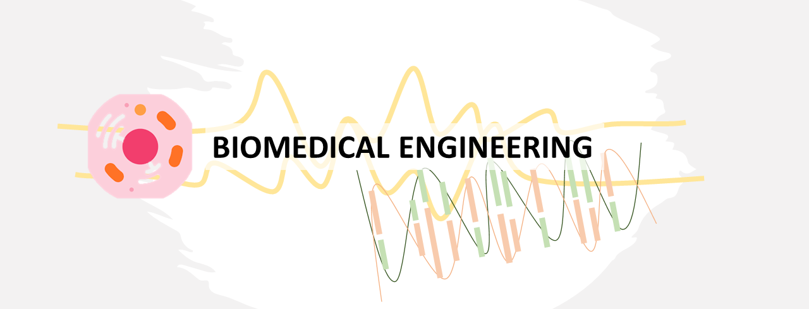

What is this page about?
I'll try to put anything fascinating about Biology as a number

What will be covered in this page? Mostly BME stuff that overlap with data, can be Bioinformatics or Medical Images! I think it will be interesting to deeply investigate the natural properties of the object. Every data inside body is almost 'patterned', only a few with slight randomization (exclude the noise/artifact).